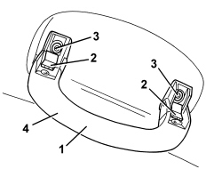

7065C30 GRAB HANDLE (ONE) LEFT, RIGHT OR CENTRE PASSENGER COMPARTMENT INTERIOR - R.R
- Path
- Procedures > 70 FITTINGS > 7065 SAFETY BELTS AND ACCESSORIES > 7065C ACCESSORIES AND DECORATIONS > 7065C30 GRAB HANDLE (ONE) LEFT, RIGHT OR CENTRE PASSENGER COMPARTMENT INTERIOR - R.R
- Kind
- repair procedure (removal / refitting; the operation number is the code)
- Applies to
- all engines; all production periods
- Interactive page
- https://sloeber94.github.io/elrnDB/alfa/159/en/#/939011375
Applies to: all engines; all production periods
 Removing
Removing
 Refitting
Refitting1. Lower the grab handle.
2. Undo the covers and open.
3. Undo the bolts.
4. Remove the grab handle.

Applies to: all engines; all production periods
Refitting
Removing- Check that the grab handle is not damaged.
- Position the grab handle.
- Tighten the bolts.
- Re-close and do up the covers.
Topics that link to this page (11)
- 5505B55 TAIL-GATE WIRING - R R
- 5505C41 PASSENGER COMPARTMENT WIRING - R.R
- 5570T27 AERIAL SUPPORT - R.R
- 5570T31 AERIAL COAXIAL LEAD - R R
- 5580C50 WINDOW BAG MODULE (ONE) LH OR RH - R.R
- 7030B12 SLIDING ROOF (ASSEMBLY) - R+R
- 7030B40 DRAINAGE CHANNEL - R R
- 7030B50 SUN ROOF SLIDING GUIDE (ONE), LH OR RH - R.R
- 7035A18 WINDSCREEN GLASS - R.R INCLUDING CLEANING HOUSING
- 7040H10 ROOF PANEL LINING - R.R.
- 7040H16 ROOF PANEL LINING FOR VERSIONS WITH SUN ROOF - R.R